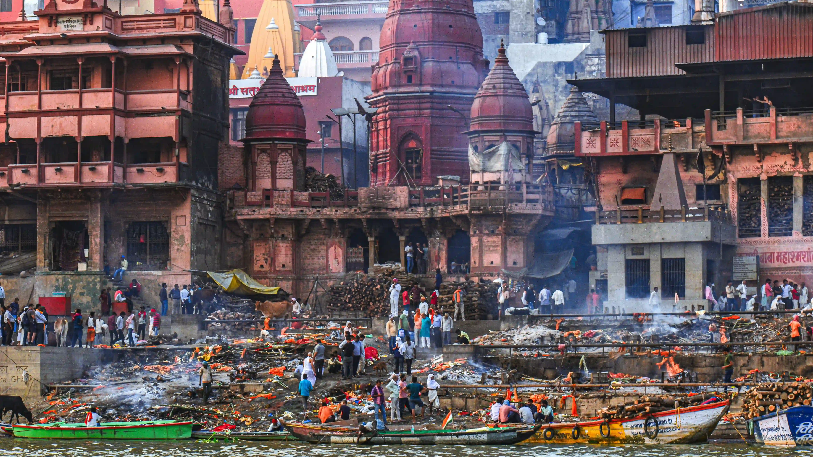
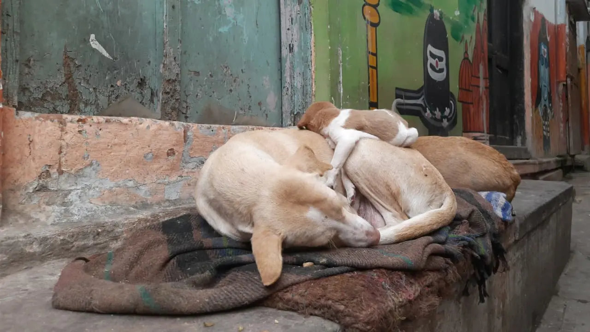
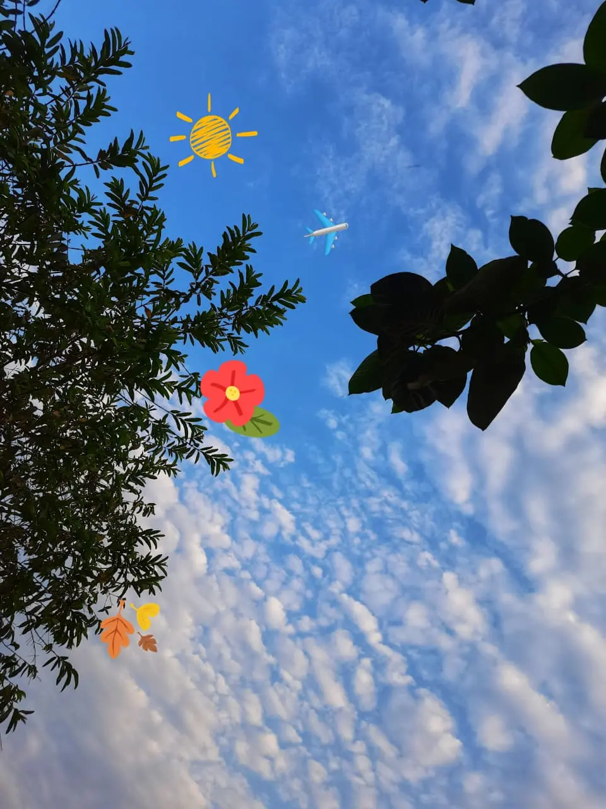
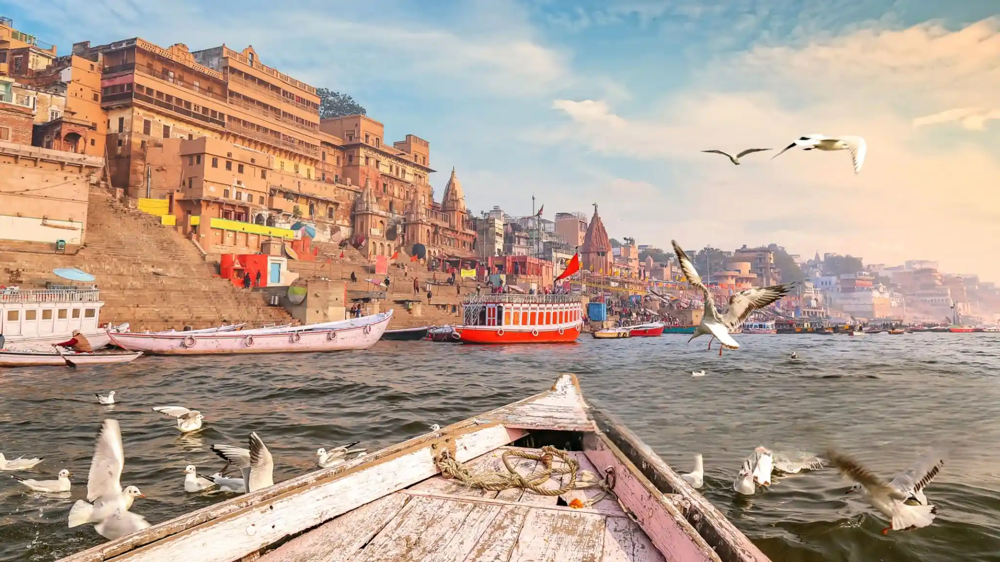

Ancient Origins
Varanasi, also known as Kashi, is considered one of the world's oldest continually inhabited cities, dating back to the 11th century BCE.
Варанаси город любви, жизни и смерти
Варанаси, один из самых древних городов в мире.
Experience the magic of Varanasi with our curated tours that showcase the rich culture, heritage, and spirituality of this ancient city.
Welcome to Varanasi, one of the oldest living cities in the world and the spiritual heart of India. This tour helps you understand the culture, religion, and daily life of this holy city on the banks of the River Ganges.
Discover the spiritual heart of India in Varanasi. Explore ancient ghats, sacred temples, and historic lanes, and experience authentic rituals along the Ganges with a local guide. A perfect blend of culture, spirituality, and tradition.

Varanasi, also known as Kashi and Banaras, is considered one of the oldest continuously inhabited cities in the world, with a history dating back over 3,000 years. Situated on the banks of the sacred River Ganga, Varanasi is the spiritual heart of India and a major center of Hindu philosophy, rituals, and culture.

A Varanasi Heritage Walk is the best way to truly experience the soul of the city. Unlike vehicle tours, a heritage walk allows you to explore hidden alleys, ancient temples, historic ghats, traditional homes, and local life at a slow and meaningful pace.
Choose from our carefully crafted experiences that showcase the best of Varanasi's spiritual and cultural heritage
Witness the spectacular evening prayer ceremony at Dashashwamedh Ghat, a mesmerizing spiritual experience.
Experience the magical sunrise over the Ganges with our guided boat tour along the sacred ghats.
Explore the narrow lanes and ancient temples of Varanasi with our expert local guides.
Visit the sacred site where Buddha delivered his first sermon after enlightenment.
Book your personalized tour today and create unforgettable memories in the spiritual capital of India.
Contact UsPlan your spiritual journey during the most favorable seasons
The perfect time to visit Varanasi with pleasant weather ranging from 5°C to 15°C. Ideal for exploring temples, ghats, and outdoor activities. The cool breeze from Ganges makes boat rides especially enjoyable.
Hot and dry with temperatures reaching 45°C. Early mornings and evenings are still pleasant for spiritual activities. Fewer crowds and better hotel deals available.
Moderate temperatures with heavy rainfall. The city turns lush green and the Ganges flows with renewed vigor. Perfect for photography enthusiasts.
Diwali (Oct-Nov), Dev Deepawali (Nov), Maha Shivratri (Feb-Mar) are spectacular times to experience Varanasi's spiritual fervor.

Discover the timeless spiritual capital that has stood for over 3000 years

Varanasi, also known as Kashi, is considered one of the world's oldest continually inhabited cities, dating back to the 11th century BCE.
The city finds mention in ancient Hindu texts like the Rigveda, Mahabharata, and Ramayana, highlighting its spiritual significance.
Home to over 2000 temples, including the famous Kashi Vishwanath Temple, and 88 ghats along the Ganges river.
Varanasi has been a center of learning and civilization for millennia. It's where Lord Buddha delivered his first sermon at Sarnath, and where Jain tirthankaras were born. The city represents the perfect blend of life, death, and spirituality in Hindu philosophy.